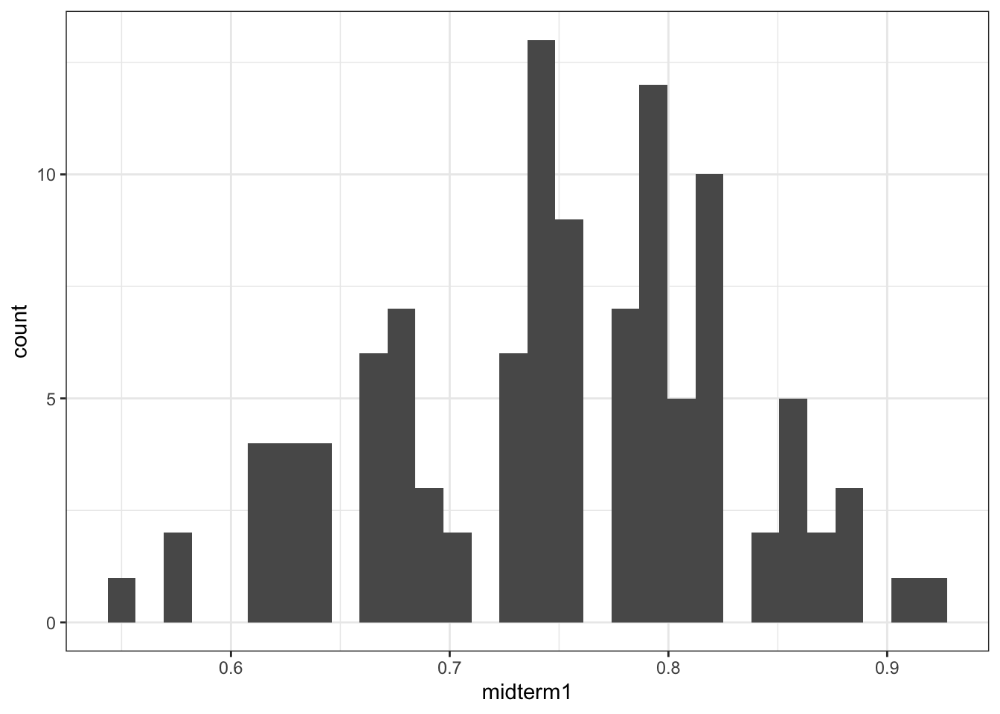
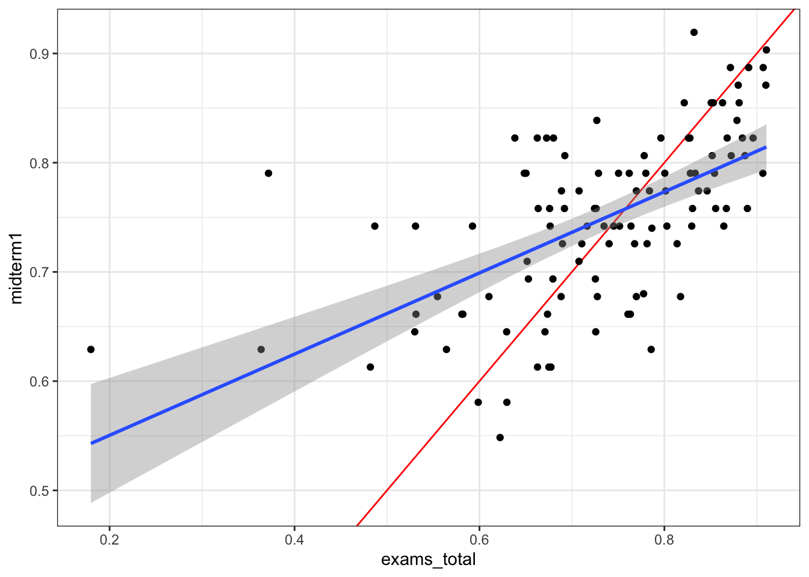
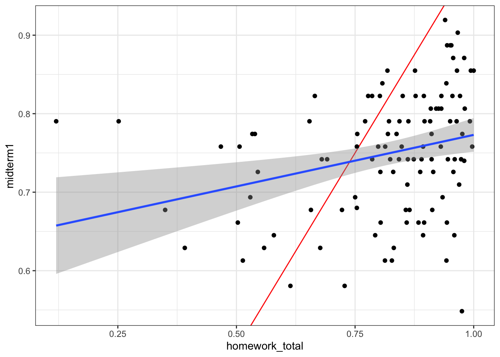
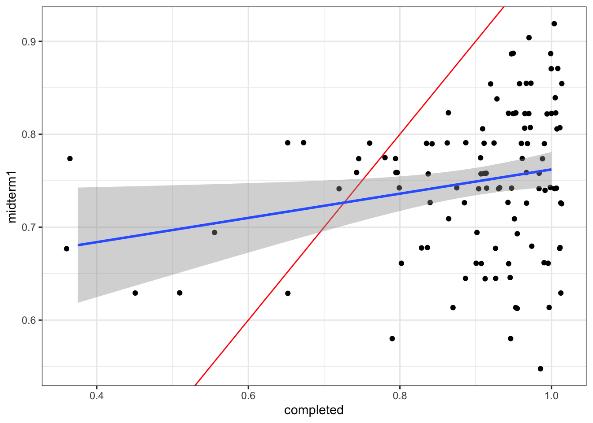
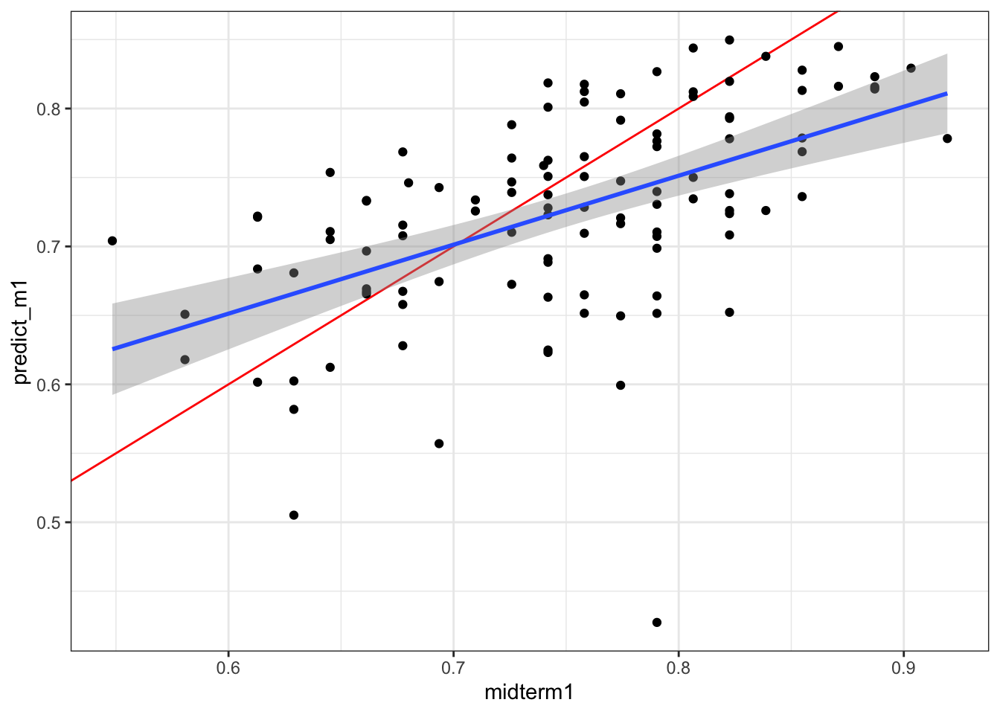

# Grades on midterms and final
exams <- all |>
transmute(
surname = `Last Name`,
id = `Net ID`,
midterm1 = `Infrastructure and Society Midterm (%)`/100,
midterm2 = (`Midterm 2` + `Midterm 2 - Instructor Graded`)/45,
final = `Sustainable Infrastructure Final Exam`/82,
exams_total = (midterm1 * 10 + midterm2 * 10 + final * 15) / 35
)After midterm 1, I promised to evaluate at the end of the course how students performed on that exam in comparison against their other work in the class. And if the midterm 1 grade was uniquely unrepresentative of the student’s other work, I would take that into account in a final grade. This is that analysis.
First, I have an export directly from Learning Suite of all the grades in the course.
Exams
First, I extract the exams and compute their weighted contribution to the exams grades as defined in Learning Suite.
The graphic below shows the grade distribution of students in the class. While the mean is lower than I might like in general, it’s not really low. But we’ll move forward regardless. ::: {.cell}
ggplot(exams |> filter(midterm1 > 0),
aes(x = midterm1)) + geom_histogram()
:::
First, is there a big difference between student’s scores on midterm 1 and their scores on other weighted exams? Yes, but there are lots of students who did better on midterm 1 than on their other exams. It is interesting that the students with high overall exam scores seemed to underperform on Midterm 1 more than students with lower overall scores. The red line in the plot below shows where the points would be if the midterm 1 score matched the overall exam score.
ggplot(exams |> filter(midterm1 > 0), aes(y = midterm1, x = exams_total)) +
geom_abline(slope = 1, intercept = 0, color = "red") +
geom_point() + stat_smooth(method = "lm")`geom_smooth()` using formula = 'y ~ x'
Homework and other assignments.
Of course, there are other assignments in the class. Let’s get some of these in here as well. I’m not going to get all of the homework, but rather create a set of the most impactful assignments.
homework <- all |>
transmute(
surname = `Last Name`,
id = `Net ID`,
sdg = `Sustainable Development Goals Essay`/15,
hwann = `HW: Annuities and Gradients`/25,
hwnpv = `HW: Equivalence`/25,
hwirr = `HW: Internal Rate of Return`/25,
interview = `Culture Interview` / 20,
book = `Book Review`/10,
packback = `Packback`/100,
) |>
mutate(
homework_total = (sdg*3 + hwann*3 + hwnpv*3 + hwirr*2 + interview*3 + book*3 + packback * 8)/(25)
)
data <- left_join(exams, homework, by = c("surname", "id"))The graph below shows midterm 1 against all of the other (non-exam homework). It’s basically the same trend as the last plot. ::: {.cell}
ggplot(data |> filter(midterm1 > 0), aes(y = midterm1, x = homework_total)) +
geom_abline(slope = 1, intercept = 0, color = "red") +
geom_point() + stat_smooth(method = "lm")
:::
Prep
Let’s see what share of the prep assignments the students did.
prep <- all |>
select( surname = `Last Name`, id = `Net ID`, contains("Pre-class" ) ) |>
select( surname, id, contains("%" ) ) |>
pivot_longer(!surname:id, names_to = "assignment", values_to = "value") |>
group_by(id) |>
mutate(complete = value > 50) |>
summarise(completed = sum(complete) / 24)
data <- left_join(data, prep, by = "id")There is a very slight correlation between this. ::: {.cell}
ggplot(data |> filter(midterm1 > 0), aes(y = midterm1, x = completed)) +
geom_abline(slope = 1, intercept = 0, color = "red") +
geom_jitter() + stat_smooth(method = "lm")
:::
Model
Let’s build a logistic model predicting the midterm 1 score as a function of the student’s other work. This is a quasi-binomial model. It would be interesting to explore some Bayesian modeling techniques for this problem, but I’m time constrained.
model <- glm(midterm1 ~ midterm2 + final + sdg + hwann + hwnpv + hwirr +
interview + book + packback + completed, data = data,
family = quasibinomial())library(modelsummary)
modelsummary(model, stars = TRUE, estimate = "{estimate} [{conf.low}, {conf.high}]",
statistic = NULL)| (1) | |
|---|---|
| (Intercept) | −0.537 [−1.916, 0.848] |
| midterm2 | 0.624 [−0.369, 1.605] |
| final | 0.103 [−1.037, 1.244] |
| sdg | 0.700 [−0.407, 1.816] |
| hwann | 0.276 [−0.304, 0.848] |
| hwnpv | 0.601 [0.060, 1.143] |
| hwirr | 0.068 [−0.388, 0.519] |
| interview | −0.340 [−1.008, 0.285] |
| book | −0.210 [−0.892, 0.441] |
| packback | 0.149 [−0.580, 0.872] |
| completed | 0.010 [−1.380, 1.397] |
| Num.Obs. | 113 |
| F | 2.754 |
| RMSE | 0.14 |
| + p < 0.1, * p < 0.05, ** p < 0.01, *** p < 0.001 |
These are interesting model results. Basically the only element (here) that affects the midterm 1 score is the grade on the NPV homework. Gettign a better score on the interview and book review has a small negative relationship, but isn’t very predictive.
What if we do random forest regression instead? This gets us similar results. Unsurprisingly, the total exam score is the most important element.
library(randomForest)Warning: package 'randomForest' was built under R version 4.3.3randomForest 4.7-1.2Type rfNews() to see new features/changes/bug fixes.
Attaching package: 'randomForest'The following object is masked from 'package:dplyr':
combineThe following object is masked from 'package:ggplot2':
marginset.seed(42)
midterm1.rf <- randomForest(midterm1 ~ ., data = data |> select(-surname, -id),
mtry=3, importance = TRUE, na.action = na.omit)
## Show "importance" of variables: higher value mean more important:
round(importance(midterm1.rf), 2) %IncMSE IncNodePurity
midterm2 6.89 0.23
final 7.72 0.29
exams_total 12.86 0.65
sdg 1.20 0.16
hwann -0.97 0.14
hwnpv 5.11 0.27
hwirr 1.90 0.11
interview -0.85 0.08
book -0.89 0.07
packback 2.01 0.13
homework_total 5.55 0.24
completed 1.27 0.14Let’s throw the predicted value on the dataset and plot how it does. Overall, this is a pretty good fit and shows that midterm 1 is not necessarily out of line with the other assessments students have done. Midterm 1 did seem to benefit students who have somewhat underperformed on their other work, while penalizing students who have been generally better prepared overall. Some adjustment to the class curve is probably warranted, mostly at the upper end of the grade distribution. ::: {.cell}
data$predict_m1 <- predict(midterm1.rf)
ggplot(data |> filter(midterm1 > 0), aes(x = midterm1, y = predict_m1)) +
geom_abline(slope = 1, intercept = 0, color = "red") +
geom_point() + stat_smooth(method = "lm")`geom_smooth()` using formula = 'y ~ x'
:::